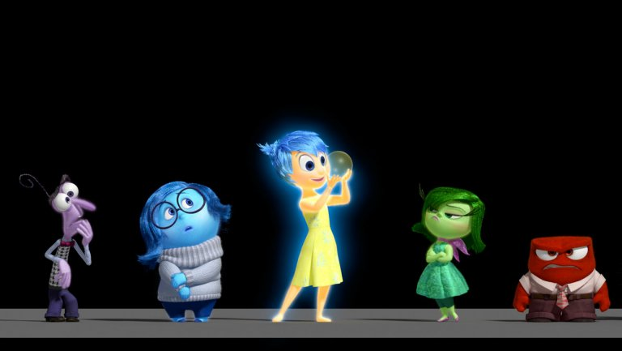

Emotional summary
- How many emotions are being captured?
Text input is analyzed and classified into 8 different emotions:
'sadness'😢,'anger' 😡,'fear' 😟,'worry' 'joy' 😊, 'love' 😍,'surprise' 😮, 'neutral' 😶 - How does scoring work?
Scores lie on a continous range of -1 to 1. (-1 being intensely -ive e.g. 'heartbroken T.T' and 1 being intensely +ive: e.g. 'Ecstatic!! (-:'). Each sentence from your original input will be assigned an emotion, and an individual sentiment score based on the intensity of the emotion identified in that sentence. - How is the average sentiment score calculated? What can it tell me?
Individual sentence scores are aggregated and used to calculate the overall sentiment score for the entire input. A score of 1 means that on balance, ALL sentences in your input are intensely positive and vice versa. - My average sentiment score reads '0' or NaN: no emotions detected?
Not true. As noted above, total score accounts for the aggregate of scores across all sentences in your text input. A closer reading of how scores have been assigned to individual sentences is required. E.g. an equal number of sentences with positive and negative scores of similar magnitudes could net out to give a total score of '0' but this does not render the text 'emotion-less'.
There is a pie chart below the total score that shows you the composition of different detected emotion(s) from the text input. The sentiment line graph to the right of the pie chart also shows you how the sentiment changes from one sentence to another. - Why does the breakdown classify a sentence as 'sad' but still assign a positive score ?
Ideally this should not happen. The emotion has been classified by a model trained on Natural Langugage Processing / Machine Learning methods while the sentiment score has been assigned based on a lexical rule-based library called VADER. Although the model has been trained on a relatively large dataset, (~0.5MN pre-classified inputs) it is still not well-trained enough to perfectly identify the emotions present all the time. However, in the event where the classified emotion and the assigned score are clearly mismatched, the score is not taken into account when calculating the overall sentiment score. - How are the 'key phrases' and 'key words' chosen?
Ideally, 'key phrases' should highlight nouns (objects, characters) and surrounding text to provide snapshot contexts about what the emotions in that sentence are associated with.
'Key words' are verbs and adjectives that similarly aim to provide more quick context to a particular sentence.
Input:
Average Sentiment Score: {{ score }}


Breakdown:
